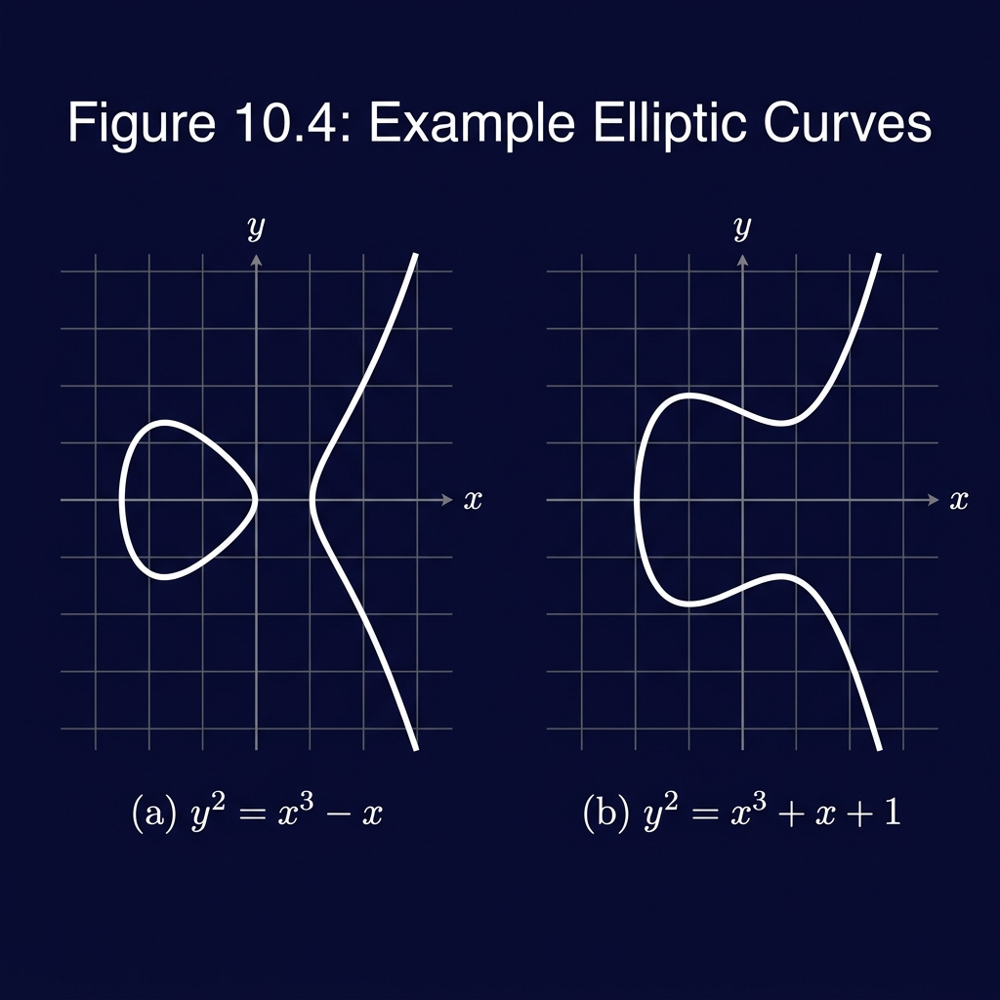
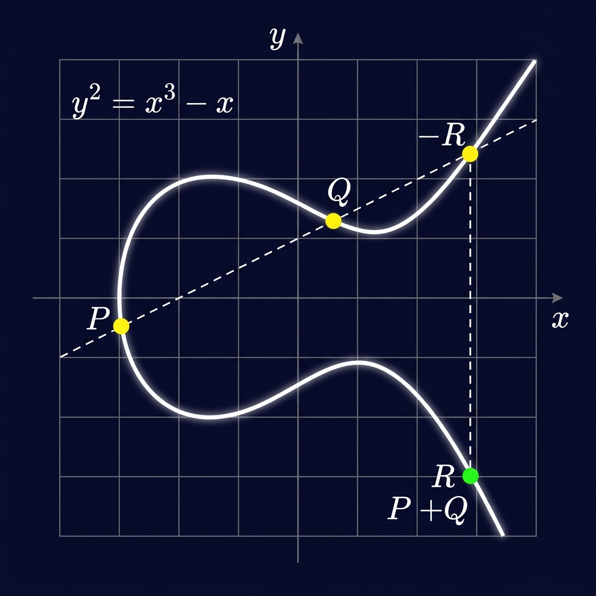
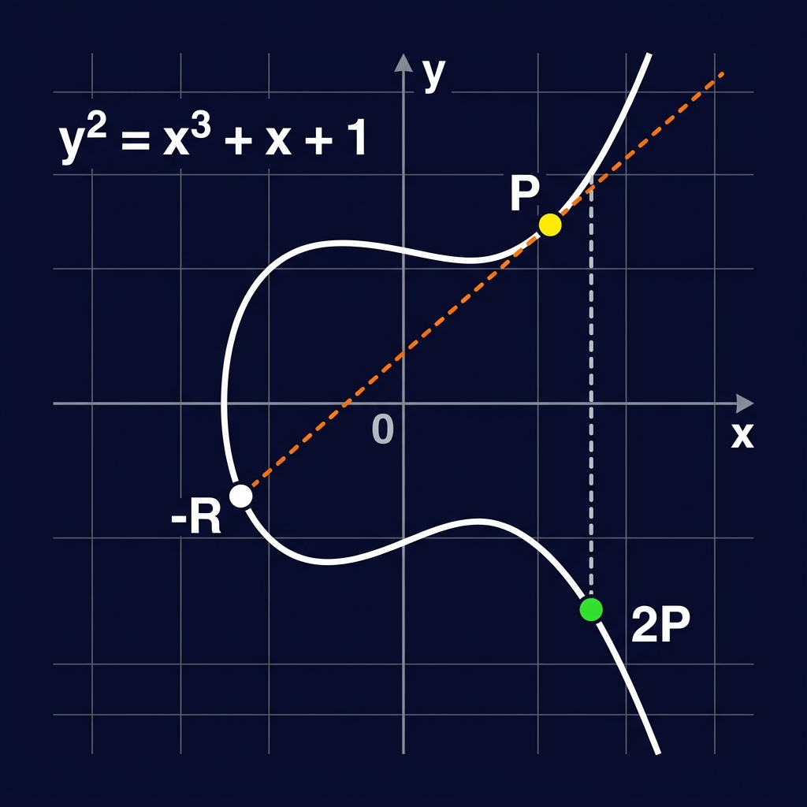
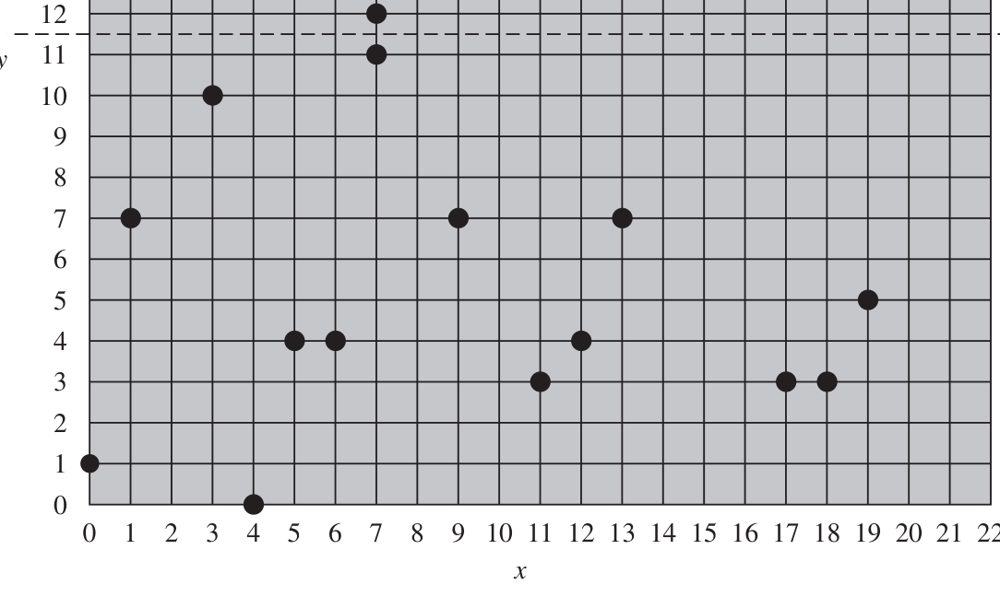
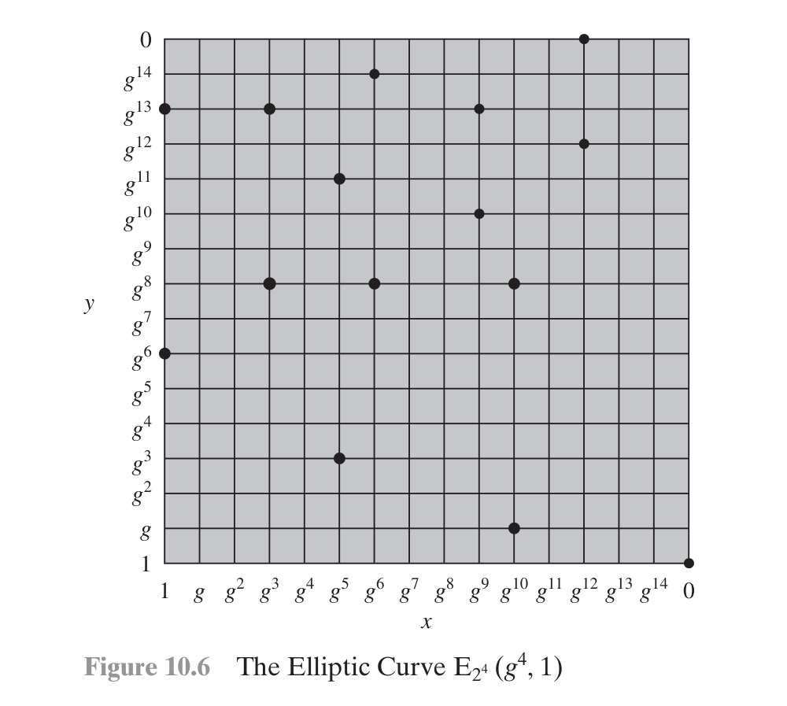

Elliptic Curve
Arithmetic
Mathematical Foundations, Group Laws, and Arithmetic over Finite Fields
Agenda & Overview
Strictly based on William Stallings' Cryptography and Network Security (Chapter 10: Elliptic Curve Arithmetic).
1. Foundations & Concepts
- Motivation: The RSA Scaling Problem
- What is an Elliptic Curve?
- Why are Elliptic Curves Used?
- Abelian Group Axioms (A1–A5)
2. Real Curves & Geometric Rules
- Elliptic Curves over Real Numbers \(\mathbb{R}\)
- The 5 Fundamental Geometric Addition Rules
- Point Doubling via Tangent Line Construction
- Algebraic Addition & Doubling Formulas
3. Prime Curves over \(\mathbb{Z}_p\)
- Two Families: Prime vs. Binary Curves
- Curves over \(\mathbb{Z}_p\), Hasse's Theorem & Condition
- 4 Formal Addition Rules & Slope Formulas
- Worked Example 1: Point Addition \(P + Q\)
- Worked Example 2: Point Doubling \(2P\)
4. Binary Curves & Scalability
- Curves over Binary Fields \(GF(2^m)\)
- 4 Formal Addition Rules & Slope Formulas in \(GF(2^m)\)
- Master Comparison: \(\mathbb{Z}_p\) vs. \(GF(2^m)\)
- Scalar Multiplication & Double-and-Add Algorithm
Motivation — Why ECC?
The Escalation of RSA Key Sizes
To resist factorization algorithms (like the General Number Field Sieve), RSA keys must grow exponentially large (2048 to 15360 bits):
- Heavy computational bottleneck on e-commerce transaction servers
- High battery and processing drain on mobile, smart cards, and IoT sensors
- Excessive memory storage and communication payload bandwidth
The Core ECC Proposition (William Stallings)
"The principal attraction of ECC, compared to RSA, is that it appears to offer equal security for a far smaller key size, thereby reducing processing overhead."
NIST Key Size Equivalence (NIST SP 800-57)
| Symmetric (bits) | RSA Key (bits) | ECC Key (bits) | Size Ratio |
|---|---|---|---|
| 80 | 1024 | 160 | 6 : 1 |
| 112 | 2048 | 224 | 9 : 1 |
| 128 (Standard) | 3072 | 256 | 12 : 1 |
| 192 | 7680 | 384 | 20 : 1 |
| 256 (Top Secret) | 15360 | 512 | 30 : 1 |
What is an Elliptic Curve?
An intuitive, mathematical definition from first principles (Stallings Section 10.3).
1. It is a Non-Singular Cubic Plane Curve
An elliptic curve is the set of points \((x, y)\) satisfying a degree-3 cubic polynomial equation in two variables:
• Not an Ellipse: The name originates from elliptic integrals used in seventeenth-century calculus to calculate the arc length of an ellipse.
• Degree 3: The highest exponent is 3 (cubic), which guarantees that any straight line intersects the curve at exactly three points (counting multiplicity).
2. The Point at Infinity \(\mathcal{O}\)
In addition to ordinary Cartesian points \((x, y)\), the curve contains a single conceptual element denoted \(\mathcal{O}\) (the point at infinity or zero point). It resides in projective space at the top and bottom of every vertical line.
3. Smoothness & Geometric Symmetry
- Symmetric about the x-axis: Since \(y = \pm\sqrt{x^3 + ax + b}\), for every point \((x, y)\) lying on the curve, its reflection \((x, -y)\) is also on the curve.
- Non-Singular (No Cusps or Self-Crossings): The discriminant \(\Delta = -16(4a^3 + 27b^2) \neq 0\). This ensures a well-defined tangent line exists at every single point!
- The Chord-and-Tangent Property: Because any straight line intersecting two points on a cubic must intersect a third point, we can turn the points on the curve into an algebraic group!

Continuous Elliptic Curve Shapes over Real Numbers \(\mathbb{R}\)
Why are Elliptic Curves Used in Cryptography?
Why do cryptographers choose elliptic curves over regular numbers or traditional groups?
1. Natural Abelian Group Structure
Points on an elliptic curve naturally form an Abelian group under the geometric chord-and-tangent addition rule.
- Adding two points produces a third point on the curve (Closure).
- The operation is strictly associative and commutative.
- \(\mathcal{O}\) serves as the identity element (\(P + \mathcal{O} = P\)).
- Reflection provides an exact inverse: \(P + (-P) = \mathcal{O}\).
2. Exponential Hardness (No Sub-Exponential Shortcut)
In regular modular arithmetic (used by RSA and classic Diffie-Hellman), integers possess multiplicative structure that allows Index Calculus algorithms to break keys in sub-exponential time \(O(e^{\sqrt[3]{\ln n}})\).
Points on an elliptic curve have no analogue to prime factorization or index calculus! The fastest known attack is Pollard's rho, which takes fully exponential time \(O(\sqrt{p})\).
Because there are no sub-exponential shortcuts, a 256-bit ECC key delivers the exact same mathematical security as a 3072-bit RSA key! This allows ultra-fast handshakes, negligible bandwidth, and seamless operation on battery-powered chips.
Abelian Groups — Mathematical Foundation
An Abelian group \(\{G, \bullet\}\) is a set \(G\) with a binary operation \(\bullet\) satisfying 5 fundamental axioms (Stallings Section 10.3).
Combining any two elements in \(G\) produces an element that also belongs to \(G\).
Grouping of elements during successive operations does not alter the result.
There exists an element \(e\) that leaves any element unchanged under the operation.
Every element \(a\) possesses a unique inverse \(a'\) that yields the identity \(e\).
The order of operands does not matter. Named after Niels Henrik Abel.
Elliptic Curves over Real Numbers \(\mathbb{R}\)
Weierstrass short form and non-singularity condition over real continuous coordinates.
\(y^2 + axy + by = x^3 + cx^2 + dx + e\). Over fields with characteristic \(\neq 2, 3\), linear change of variables simplifies it to \(y^2 = x^3 + ax + b\).
Acts as the identity element. Every vertical line intersects the curve at \((x, y)\), \((x, -y)\), and \(\mathcal{O}\).
\( 4a^3 + 27b^2 \neq 0 \): Guarantees the cubic polynomial has distinct roots, eliminating self-intersections or cusps.

Stallings Fig 10.4: Curves for (a) \(y^2 = x^3 - x\) and (b) \(y^2 = x^3 - x + 1\)
Geometric Addition — The 5 Fundamental Rules
\(\mathcal{O}\) serves as the additive identity. Thus \(\mathcal{O} = -\mathcal{O}\). For any point \(P\) on the curve, adding \(\mathcal{O}\) leaves \(P\) unchanged.
The negative of \(P=(x, y)\) has the same x-coordinate but negated y-coordinate. Joined by a vertical line: \(P + (-P) = \mathcal{O}\).
Draw a straight secant line through \(P\) and \(Q\). It intersects the cubic curve at a unique 3rd point \(R\). The sum \(P+Q\) is the reflection of \(R\) across the x-axis.
If two points share the same x-coordinate (\(x_P = x_Q, y_P = -y_Q\)), the line is vertical and intersects at the point at infinity \(\mathcal{O}\).
To add a point to itself, draw the tangent line at \(Q\). It intersects the curve at point \(S\). Reflect \(S\) across the x-axis to obtain \(2Q\).

Point Doubling — Tangent Construction \(2P\)
When adding a point to itself (\(P + P\)), the secant line becomes the tangent line (Stallings Section 10.3).
The Tangent Geometric Law
As point \(Q \to P\), the secant line passing through \(P\) and \(Q\) approaches the tangent line to the elliptic curve at \(P\).
Using implicit differentiation of \(y^2 = x^3 + ax + b\):
\(2y \frac{dy}{dx} = 3x^2 + a \implies \lambda = \frac{3x_P^2 + a}{2y_P}\).
The tangent touches \(P\) with multiplicity 2 and intersects the curve at exactly one other point \(S\).
Reflecting point \(S = (x_S, y_S)\) yields the doubled point \(2P = -S = (x_S, -y_S)\).

Algebraic Formulas over Real Numbers \(\mathbb{R}\)
The geometric secant and tangent constructions translate directly into closed-form algebraic equations for computation.
\(\lambda\) is the slope of the secant line through distinct points \(P\) and \(Q\).
\(\lambda\) is the slope of the tangent line at \(P\), found via implicit differentiation \(\frac{d}{dx}(y^2 = x^3 + ax + b)\).
Two Cryptographic Families — \(\mathbb{Z}_p\) vs. \(GF(2^m)\)
For cryptography, real numbers cannot be used due to rounding errors. Variables and coefficients are restricted to finite fields.
1. Prime Curves over \(\mathbb{Z}_p\)
Software Optimized- Field Elements: Integers from \(0\) through \(p-1\) (where \(p\) is an odd prime).
- Arithmetic: Standard integer addition & multiplication modulo \(p\).
- Curve Equation: \(y^2 \equiv x^3 + ax + b \pmod p\).
- Why Best for Software? (Stallings): Standard 64-bit processors have dedicated integer ALUs. Prime field modular arithmetic executes efficiently without requiring specialized bit-level manipulation.
2. Binary Curves over \(GF(2^m)\)
Hardware Optimized- Field Elements: \(2^m\) binary polynomials of degree \(< m\).
- Arithmetic: Polynomial addition (bitwise XOR) and reduction modulo an irreducible polynomial.
- Curve Equation: \(y^2 + xy = x^3 + ax^2 + b\).
- Why Best for Hardware? (Stallings): Addition requires no carry propagation (just simple XOR gates). A compact, fast cryptosystem can be built with remarkably few logic gates in smart cards & FPGAs!
Elliptic Curves over Prime Field \(\mathbb{Z}_p\)
Set Definition: \(E_p(a, b)\)
The set \(E_p(a, b)\) consists of all pairs of integers \((x, y) \in \mathbb{Z}_p \times \mathbb{Z}_p\) that satisfy the congruence, together with the point at infinity \(\mathcal{O}\).
\( (4a^3 + 27b^2) \bmod p \neq 0 \)
Number of Points — Hasse's Theorem
For \(p = 23\): \(15 \le N \le 33\). The actual number of points on \(E_{23}(1, 1)\) is \(N = 28\) (27 grid pairs + \(\mathcal{O}\)).

Stallings Table 10.1 — All 27 Points on \(E_{23}(1,1)\) + \(\mathcal{O}\)
(0,1), (0,22), (1,7), (1,16), (3,10), (3,13), (4,0), (5,4), (5,19), (6,4), (6,19), (7,11), (7,12), (9,7), (9,16), (11,3), (11,20), (12,4), (12,19), (13,7), (13,16), (17,3), (17,20), (18,3), (18,20), (19,5), (19,18), and \(\mathcal{O}\)
Arithmetic Rules & Slope Formulas over \(\mathbb{Z}_p\)
The four formal algebraic addition rules governing the finite abelian group \(E_p(a, b)\) (Stallings Section 10.3).
\(\mathcal{O}\) serves as the identity element for all points \(P \in E_p(a, b)\).
If \(P = (x_P, y_P)\), then \(P + (x_P, -y_P) = \mathcal{O}\).
Book Example: In \(E_{23}(1, 1)\), for \(P = (13, 7)\), we have \(-P = (13, -7) = (13, 16)\) because \(-7 \bmod 23 = 16\). Note \((13, 16) \in E_{23}(1, 1)\).
\( \lambda = \left(\dfrac{y_Q - y_P}{x_Q - x_P}\right) \bmod p = (y_Q - y_P)(x_Q - x_P)^{-1} \bmod p \)
\( x_R = (\lambda^2 - x_P - x_Q) \bmod p \)
\( y_R = (\lambda(x_P - x_R) - y_P) \bmod p \)
\( \lambda = \left(\dfrac{3x_P^2 + a}{2y_P}\right) \bmod p = (3x_P^2 + a)(2y_P)^{-1} \bmod p \)
\( x_R = (\lambda^2 - 2x_P) \bmod p \)
\( y_R = (\lambda(x_P - x_R) - y_P) \bmod p \)
Worked Numerical Example 1 — Point Addition \(P + Q\)
Complete step-by-step evaluation on curve \(E_{23}(1,1): \; y^2 \equiv x^3 + x + 1 \pmod{23}\) (Stallings Section 10.3).
We need \(6^{-1} \bmod 23\). Since \(6 \times 4 = 24 \equiv 1 \pmod{23}\), the inverse is \(6^{-1} \equiv 4\).
\( x_R = (\lambda^2 - x_P - x_Q) \bmod 23 \)
\( x_R = (11^2 - 3 - 9) \bmod 23 \)
\( x_R = (121 - 12) \bmod 23 = 109 \bmod 23 = \mathbf{17} \)
\( y_R = (\lambda(x_P - x_R) - y_P) \bmod 23 \)
\( y_R = (11(3 - 17) - 10) \bmod 23 \)
\( y_R = (11(-14) - 10) = -164 \bmod 23 = \mathbf{20} \)
Worked Numerical Example 2 — Point Doubling \(2P\)
Complete step-by-step evaluation on curve \(E_{23}(1,1): \; y^2 \equiv x^3 + x + 1 \pmod{23}\) with \(a=1, b=1, p=23\).
Notice \(28 \bmod 23 = 5\), so \(\lambda = \left(\frac{5}{20}\right) \bmod 23 = \left(\frac{1}{4}\right) \bmod 23\).
Since \(4 \times 6 = 24 \equiv 1 \pmod{23}\), the modular inverse is \(4^{-1} \equiv 6\).
\( x_R = (\lambda^2 - 2x_P) \bmod 23 \)
\( x_R = (6^2 - 2(3)) \bmod 23 \)
\( x_R = (36 - 6) \bmod 23 = 30 \bmod 23 = \mathbf{7} \)
\( y_R = (\lambda(x_P - x_R) - y_P) \bmod 23 \)
\( y_R = (6(3 - 7) - 10) \bmod 23 \)
\( y_R = (6(-4) - 10) = -34 \bmod 23 = \mathbf{12} \)
Elliptic Curves over Binary Fields \(GF(2^m)\)
Finite fields with characteristic 2: where arithmetic is defined over polynomials with coefficients in \(\{0, 1\}\) (Stallings Section 10.3).
Weierstraß Equation for Characteristic 2
Non-Singularity Condition for \(GF(2^m)\)
If \(b = 0\), the curve is singular (has a node or cusp).
Concrete Field Example: \(GF(2^4)\)
Irreducible polynomial: \(f(x) = x^4 + x + 1\). Generator \(g\) satisfies \(f(g) = 0 \implies g^4 = g + 1 = 0011_2\).
Concrete Curve: \(E_{2^4}(g^4, 1)\)
Parameters: \(a = g^4, \; b = g^0 = 1\). Equation: \(y^2 + xy = x^3 + g^4x^2 + 1\).
LHS: \((g^3)^2 + (g^5)(g^3) = g^6 + g^8 = 1100_2 \oplus 0101_2 = \mathbf{1001_2}\)
RHS: \((g^5)^3 + g^4(g^5)^2 + 1 = g^{15} + g^{14} + 1 = 0001_2 \oplus 1001_2 \oplus 0001_2 = \mathbf{1001_2}\)
LHS = RHS = 1001₂ ✓ Point lies on the curve!

Stallings Fig 10.6 — The Elliptic Curve \(E_{2^4}(g^4, 1)\) (16 Points)
Arithmetic Rules & Slope Formulas over \(GF(2^m)\)
Addition rules and coordinate equations for \(E_{2^m}(a, b)\) (Stallings Section 10.3, Equations p. 9–10).
\(\mathcal{O}\) serves as the identity element for all points in \(E_{2^m}(a, b)\).
If \(P = (x_P, y_P)\), then \(P + (x_P, x_P + y_P) = \mathcal{O}\).
Crucial Difference from \(\mathbb{Z}_p\): In characteristic 2, \(-1 = +1\). The negative of \(P\) is not \((x, -y)\), but \((x_P, x_P + y_P)\) because reflection across the line \(x\) negates \(y\) via \(y + (x + y) = x\).
\( \lambda = \dfrac{y_Q + y_P}{x_Q + x_P} \)
\( x_R = \lambda^2 + \lambda + x_P + x_Q + a \)
\( y_R = \lambda(x_P + x_R) + x_R + y_P \)
\( \lambda = x_P + \dfrac{y_P}{x_P} \)
\( x_R = \lambda^2 + \lambda + a \)
\( y_R = x_P^2 + (\lambda + 1)x_R \)
Master Comparison — \(\mathbb{Z}_p\) vs. \(GF(2^m)\)
Side-by-side architectural and formula comparison of the two ECC cryptographic curve families.
| Property | Prime Curves \(\mathbb{Z}_p\) | Binary Curves \(GF(2^m)\) |
|---|---|---|
| Field Elements | Integers \(\{0, 1, \dots, p-1\}\) (odd prime \(p\)) | Polynomials of degree \(< m\) with binary bits |
| Curve Equation | \( y^2 \equiv x^3 + ax + b \pmod p \) | \( y^2 + xy = x^3 + ax^2 + b \) |
| Singularity Check | \((4a^3 + 27b^2) \bmod p \neq 0\) | \(b \neq 0\) |
| Point Negation \(-P\) | \((x_P, \; p - y_P)\) | \((x_P, \; x_P + y_P)\) |
| Addition Slope \(\lambda\) | \( \lambda = \left(\frac{y_Q - y_P}{x_Q - x_P}\right) \bmod p \) | \( \lambda = \frac{y_Q + y_P}{x_Q + x_P} \) |
| Doubling Slope \(\lambda\) | \( \lambda = \left(\frac{3x_P^2 + a}{2y_P}\right) \bmod p \) | \( \lambda = x_P + \frac{y_P}{x_P} \) |
| Sum \(x_R\) Formula | \(x_R = (\lambda^2 - x_P - x_Q) \bmod p\) | \(x_R = \lambda^2 + \lambda + x_P + x_Q + a\) |
| Doubling \(x_R\) | \(x_R = (\lambda^2 - 2x_P) \bmod p\) | \(x_R = \lambda^2 + \lambda + a\) |
| Primary Hardware Target | Software implementations (CPUs, Servers) | Hardware implementations (Smart cards, ASICs, FPGAs) |
Scalar Multiplication & The Double-and-Add Algorithm
Scalar multiplication \(kP\) is the core engine of ECC — computing \(kP\) efficiently in \(O(\log_2 k)\) operations.
🐢 Naïve Method vs. 🐇 Double-and-Add
To compute \(kP = \underbrace{P + P + \cdots + P}_{k\text{ times}}\):
- Naïve: Performing \(k-1\) point additions takes \(O(k)\) time. For 256-bit \(k \approx 2^{256}\), this requires more steps than atoms in the universe!
- Double-and-Add: Express \(k\) in binary, scanning bits from MSB to LSB. Always double; add \(P\) only when the bit is 1.
Step-by-Step Example: Compute \(21P\) (\(21 = 10101_2\))
| Bit | Operation | Accumulator Result |
|---|---|---|
| 1 (MSB) | Initialize | \(P\) |
| 0 | Double | \(2P\) |
| 1 | Double, Add \(P\) | \(4P + P = 5P\) |
| 0 | Double | \(10P\) |
| 1 (LSB) | Double, Add \(P\) | \(20P + P = 21P\) |
Exactly 4 doublings + 2 additions instead of 20 additions!
Summary & Conclusion
ECC delivers identical cryptographic strength to RSA with 10–30× smaller key sizes, dramatically cutting compute and bandwidth costs.
Points on elliptic curves form an Abelian group satisfying all 5 axioms under chord-and-tangent geometric rules and algebraic formulas.
\(\mathbb{Z}_p\) (Prime Curves) for software efficiency; \(GF(2^m)\) (Binary Curves) for carry-free, ultra-compact hardware implementations.
With no sub-exponential index calculus attacks, elliptic curve arithmetic provides the gold standard of modern public-key cryptography.
Thank You!
Questions & Discussion